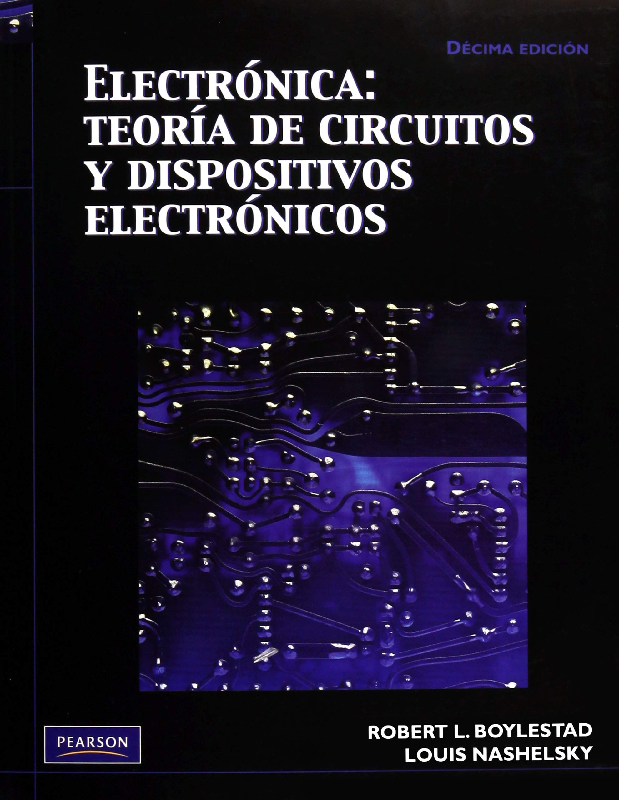
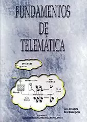
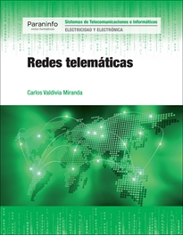
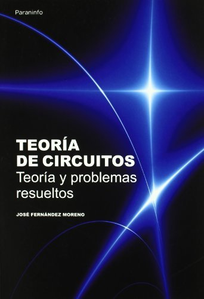
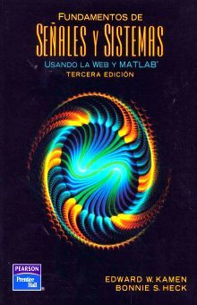

--- Te damos las bienvenida a nuestra pagina donde te explicaremos todo lo que debes saber sobre la carrera de telematica.---
--- 1- La palabra telemática se refiere a la combinación de la informática y de la tecnología de la comunicación para el envío y recepción de datos.
--- 2- En sentido amplio, resulta de la unión de las telecomunicaciones y la informática, pudiendo implicar desde la tecnología de envío, recepción y almacenamiento de información a través de dispositivos de telecomunicación hasta su aplicación en vehículos, la llamada telemática de vehículos.
--- 3- Y es que, a pesar de que la telemática se sigue usando en múltiples ámbitos, es un término que en la actualidad se usa con frecuencia para hacer referencia a las soluciones telemáticas aplicadas en vehículos.
¿En qué consiste la telemática? Funcionamiento
--- Los sistemas telemáticos cuentan con un dispositivo de seguimiento que envía, recibe y almacena datos.
--- El dispositivo recoge, junto a los datos GPS, otra información específica y la transmite a un servidor centralizado a través de redes móviles o satélite para que la interprete y la muestre al usuario final en tiempo real en sitios web seguros o aplicaciones optimizadas para teléfonos móviles y tablets.
¿En qué consiste la telemática? Funcionamiento
Diseño de nuevas aplicaciones para sistemas, servicios correspondientes a las áreas de redes y medidas de seguridad que deriven en un desarrollo Rápido, Fiable y Seguro de las Telecomunicaciones entabladas
Caracteristicas:
Los inicios de la telemática:
La telemática se fue desarrollando a la vez que Internet. Al mismo tiempo, se desarrolló la técnica superior de ingeniería telemática. Conforme se reducía el tamaño de los ordenadores y aumentaba su uso, también crecía la necesidad de encontrar un modo más sencillo de intercambiar datos. Es a partir de entonces cuando se empezó a utilizar la tecnología de los sistemas de telecomunicación para conectar dispositivos entre ellos. La telemática había nacido. (Dato clave: Simon Nora y Alain Minc acuñaron en 1978 el término telemática en su informe titulado L’Informatisation de la société. Este informe se preparó para el entonces Primer Ministro francés, Valéry Giscard d’Estaing, como respuesta al desarrollo de la informática y el nacimiento de la era de la información.
Cómo funciona la telemática:
Los sistemas telemáticos incluidos en los vehículos cuentan con un dispositivo de seguimiento que envía, recibe y almacena datos de telemetría. Se conecta con una tarjeta SIM mediante un sistema de diagnóstico de a bordo en vehículo (ODBII) o un puerto CAN bus. La comunicación a través de la red inalámbrica se realiza gracias a un módem de a bordo.
¿De qué se encarga la telemática?
Con un mundo cada vez más conectado, el uso de la telemática en la actualidad no tiene prácticamente límites. Continuamente aumenta el número de dispositivos interconectados en el Internet de las cosas (IoT) y se desarrollan formas nuevas de usar la información basada en la ubicación de los servicios de comunicaciones.
Sin embargo, en muchos casos todavía persiste la idea equivocada de que la telemática aplicada a los vehículos solo muestra su localización GPS, una idea que ni siquiera se aproxima al potencial real de los sistemas que usan esta tecnología de la información.
Aplicaciones
El dispositivo de seguimiento del vehículo registra la localización y realiza un diagnóstico de la información.
La información se transmite mediante redes móviles o satélite.
Los servidores de Verizon Connect interpretan los datos.
La información de seguimiento del vehículo se actualiza prácticamente en tiempo real en un dispositivo local o en aplicaciones móviles.
Basica
Medio
Avanzado
Programacion
♣
Interpretacion de señales
♣
Electronica basica
♣
LA IMPORTANCIA DE LA TELEMATICA EN LA EDUCACIÓN
La Telemática será uno de los más importantes desarrollos en el campo de la educación, ya que el éxito del futuro de un pueblo o comunidad educativa radica en las
posibilidades de vivir el mundo con su entorno aunque se tenga cierta falencia en el tema."La información es la materia prima que necesitamos para crear
conocimientos con los que se afrontan las problemáticas que se nos van presentando cada día en el trabajo".Esto lo que nos quiere decir; es que la informática, es
una herramienta que debemos saber utilizar para poder explorarla de la mejor forma posible.Hay que tener en claro cómo, cuándo, y dónde aplicar esta gran gama
de herramientas, y poder decir que tenemos algo asegurado; ya que la telemática es perfecta como ayudante educativo siempre y cuando sea muy bien utilizada. Sin
duda, la Telemática será uno de los más importantes desarrollos causando muchos cambios en la actualidad; tanto buenos como malos, los cambios malos se los
debemos a la falta de experiencia que se tuvo o se tiene con respecto a ciertos ámbitos de esta área; sin embargo la telemática nos ha llevado a un avance tecnológico
realmente asombroso. Un avance que si es bien utilizado y bien diseñado nos puede llevar al verdadero triunfo educativo.La telemática es importante desde el uso
que se promueve a través del ordenador, a partir de este momento se integran programas informáticos y actividades educativas con el fin de adquirir nuevas y
distintas adaptaciones de flexibilidad, de comunicación y fijar un horizonte de máximo avance tecnológico. Tiene la ventaja de facilitar el trabajo en equipo, permite
un aprendizaje a través de grupos colaborativos, flexibilidad de tiempo y localidad, oportunidades de participación, aprendizaje activo, disponibilidad de otros
recursos como video, chat, etc. Además de sus ventajas ella también cuenta con algunas desventajas que requieren efectos motivadores para la participación; así
pues tienen sobrecarga de información, ofertas limitadas, demora en la retroalimentación, habilidades de lectura y técnicas para nuestro futuro.
Origen del término
El término telemática se acuñó en Francia (télématique). En 1976, en un informe encargado por el presidente francés y elaborado por Simon Nora y Alain Minc (conocido como informe Nora-Minc y distribuido por el título: Informatización de la Sociedad), en el que se daba una visión increíblemente precisa de la evolución tecnológica futura.
Pero al igual que en Francia, en los países anglosajones también existe la disciplina telemática, la cual es denominada como Computer and Communications (del inglés: ‘Ordenador y Comunicaciones’) o Compunication (concepto acuñado por Wen Gao3 en su artículo Compunication: From Concept to Practice4). No obstante hay matices claves a distinguir
entre los dos términos. Para aclarar esto, conviene situarse en el contexto de la época: por una parte Francia, que ponía claro énfasis en las telecomunicaciones como motor de su transformación social en los años 70, mientras que Estados Unidos estaba viviendo una gran revolución de la informática. Así, Compunication (computadores + comunicación)
apunta a un modelo con mayor relevancia de los sistemas informáticos; telemática (télématique) por su parte, refiere a un mayor énfasis en la telecomunicación en sí. En la actualidad, esta diferencia de origen se ha perdido, ya que esta disciplina científica y tecnológica ha convergido por completo a nivel mundial, para formar un único cuerpo de
conocimiento bien establecido. Naciendo de esta forma el actual significado de la telemática.
Otra modalidad es encontrarla focalizada en una actividad específica como telemática
Perfil del Técnico o Ingeniero Telemático
Planificación, despliegue, mantenimiento y gestión, operación, integración de tecnologías, etc, para entornos LAN, MAN y WAN, que puedan hacer uso tanto de tecnologías de cable como inalámbricas, así como Internet/Intranets, etc. para la prestación tanto de servicios de voz como de datos para diversas aplicaciones, desde servicios comunes de Internet hasta otros más sofisticados como podrían ser las actividades relacionadas con el despliegue y la operación con las redes de telecomunicaciones en urbanizaciones y polígonos industriales y de viviendas o las redes de telefonía móvil privadas (Servicio Móvil Terrestre) para flotas de vehículos, etc..
Supervisión, administración, participación o asistencia técnica en desarrolladores y suministradores de equipos y sistemas de telecomunicación.
Elaboración de Proyectos de Infraestructuras comunes de telecomunicación en edificios (ICT9).
Auditorías y diseño de redes.
Análisis, diseño e implementación de sistemas y herramientas de seguridad tanto para el almacenamiento como la transmisión de la información, así como en los accesos a redes y sistemas.
Formar profesionales que aporten con el diseño, administración, implementación, mantenimiento y operación de sistemas y servicios basados en redes de comunicación proporcionando a la sociedad soluciones tecnológicas integrales, con énfasis en la responsabilidad social y el desarrollo sustentable.
Misión
Formar profesionales de excelencia, líderes y emprendedores de proyectos en las áreas de redes, infraestructura tecnológica y servicios telemáticos. Realizar investigación científica e innovación tecnológica relacionada a los sistemas y servicios basados en red con sólidos valores éticos y morales para contribuir con el desarrollo tecnológico del Ecuador.
Laboratorios
La carrera de Ingeniería en Telemática cuenta con los siguientes laboratorios para servicio de los estudiantes:
Laboratorio de Redes Avanzadas.
Laboratorio de Sistemas y Señales
Laboratorio de Investigación de Redes e Infraestructura Tecnológica
Libros de Telematica

Boylestad
$ 700.00

Fun de Telematica
$ 890.00

Redes Telematica
$ 1100.00
Progra_principientes
$ 1000.00

Progra phyton
$ 900.00

Teoria de Circuitos
$ 850.00
----------------------------------------------
BOOTSTRAP POPOVER
----------------------------------------------
Si desea saber lass ofertas educativas porfavor dejenos su correo
Una definición de alto nivel
JavaScript es un lenguaje de programación o de secuencias de comandos que te permite implementar funciones complejas en páginas web, cada vez que una página web hace algo más que sentarse allí y mostrar información estática para que la veas, muestra oportunas actualizaciones de contenido, mapas interactivos, animación de Gráficos 2D/3D, desplazamiento de máquinas reproductoras de vídeo, etc., puedes apostar que probablemente JavaScript está involucrado. Es la tercera capa del pastel de las tecnologías web estándar, dos de las cuales (HTML y CSS) hemos cubierto con mucho más detalle en otras partes del Área de aprendizaje.
La programación orientada a objetos se basa en el concepto de crear un modelo del problema de destino en sus programas. La programación orientada a objetos disminuye los errores y promociona la reutilización del código. Python es un lenguaje orientado a objetos. Los objetos definidos en Python tienen las características siguientes:
Identidad. Cada objeto debe ser distinguido y ello debe poder demostrarse mediante pruebas. Las pruebas is e is not existen para este fin.
Estado Cada objeto debe ser capaz de almacenar el estado. Para este fin, existen atributos, tales como variables de instancias y campos.
Comportamiento. Cada objeto debe ser capaz de manipular su estado. Para este fin existen métodos.
Python incluye las características siguientes para dar soporte a la programación orientada a objetos:
Creación de objetos basada en clases. Las clases son plantillas para la creación de objetos. Los objetos son estructuras de datos con el comportamiento asociado.
¿Quieres saber qué es el lenguaje C y sus características? En este artículo resolvemos tus dudas sobre este lenguaje de programación de bajo nivel.
C es un lenguaje de programación (considerado como uno de lo más importantes en la actualidad) con el cual se desarrollan tanto aplicaciones como sistemas operativos a la vez que forma la base de otros lenguajes más actuales como Java, C++ o C#.
El lenguaje C no es sencillo, por eso recomendamos que se haga una primera aproximación realizando un curso de programación en C para adquirir los conocimientos básicos y poder empezar a trabajar con una base sólida.
Todos los programas que son creados tienen un diferentes tipos de formato. Este formato es conocido como la sintaxis. La sintaxis en C es una serie de reglas y procesos que lideran la estructura de un programa. Estas reglas tienen que ser entendidas por el compilador para que se pueda crear un programa en C válido, es decir, tienen que establecer cómo comienza una línea de código en C, cómo termina o cuándo usar, por ejemplo, comillas o llaves. El lenguaje en C hace distinción entre mayúsculas y minúsculas siendo este el motivo por el que se programa en minúsculas.